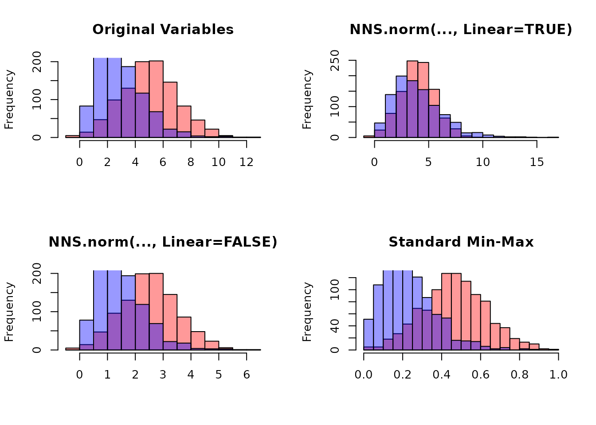

Getting Started with NNS: Normalization and Rescaling
Fred Viole
Source:vignettes/NNSvignette_04_Normalization_and_Rescaling.Rmd
NNSvignette_04_Normalization_and_Rescaling.RmdOverview
This vignette covers two related tools:
-
NNS.norm()for cross‑variable normalization when comparing multiple series. -
NNS.rescale()for single‑vector rescaling with either min‑max or risk‑neutral targets.
Both functions perform deterministic affine transformations that preserve rank structure while modifying scale.
NNS.norm(): Normalize Multiple Variables
NNS.norm() rescales variables to a common magnitude
while preserving distributional structure. The method can be
linear (all variables forced to have the same mean) or
nonlinear (using dependence weights to produce a more
nuanced scaling). In the nonlinear case, the degree of association
between variables influences the final normalized values.
Mathematical Structure
Let be an matrix of variables.
Step 3: Dependence Weight Matrix
If linear = FALSE:
- If number of variables :
- Otherwise:
NNS.dep()returns a symmetric matrix of nonlinear dependence measures.
If linear = TRUE, the weighting effectively becomes:
Nonlinear Case Interpretation
Thus, the normalized mean becomes a dependence‑weighted average of original means. Variables more strongly dependent with higher‑mean variables scale upward more.
Examples
Basic Multivariate Example
This holds for any distribution type and can be applied to vectors of different lengths.
set.seed(123)
A <- rnorm(100, mean = 0, sd = 1)
B <- rnorm(100, mean = 0, sd = 5)
C <- rnorm(100, mean = 10, sd = 1)
D <- rnorm(100, mean = 10, sd = 10)
X <- data.frame(A, B, C, D)
# Linear scaling
lin_norm <- NNS.norm(X, linear = TRUE, chart.type = NULL)
head(lin_norm)
A Normalized B Normalized C Normalized D Normalized
[1,] -29.929719 31.889828 5.819152 1.4264014
[2,] -12.291609 -11.531393 5.396317 1.2388239
[3,] 83.235911 11.073887 4.643781 0.3078703
[4,] 3.765188 15.601030 5.029380 -0.2630481
[5,] 6.904039 42.717726 4.572611 2.8193657
[6,] 91.585447 2.021274 4.543080 6.6681079
# Verify means are equal
apply(lin_norm, 2, function(x) c(mean = mean(x), sd = sd(x)))
A Normalized B Normalized C Normalized D Normalized
mean 4.827727 4.827727 4.8277270 4.827727
sd 48.744888 43.407590 0.4531172 5.203436Now compare with nonlinear scaling:
nonlin_norm <- NNS.norm(X, linear = FALSE, chart.type = NULL)
head(nonlin_norm)
A Normalized B Normalized C Normalized D Normalized
[1,] -2.7834653 0.32807768 3.178568 0.7439872
[2,] -1.1431202 -0.11863321 2.947605 0.6461499
[3,] 7.7409438 0.11392645 2.536550 0.1605800
[4,] 0.3501627 0.16050101 2.747174 -0.1372015
[5,] 0.6420759 0.43947344 2.497676 1.4705341
[6,] 8.5174510 0.02079456 2.481545 3.4779738
apply(nonlin_norm, 2, function(x) c(mean = mean(x), sd = sd(x)))
A Normalized B Normalized C Normalized D Normalized
mean 0.4489788 0.04966692 2.637026 2.518062
sd 4.5332769 0.44657066 0.247504 2.714025Note that the means differ and the standard deviations are smaller than in the linear case, reflecting the dependence structure.
Normalize list of unequal vector lengths
set.seed(123)
vec1 <- rnorm(n = 10, mean = 0, sd = 1)
vec2 <- rnorm(n = 5, mean = 5, sd = 5)
vec3 <- rnorm(n = 8, mean = 10, sd = 10)
vec_list <- list(vec1, vec2, vec3)
NNS.norm(vec_list)
$`x_1 Normalized`
[1] 13.074058 -3.004912 -11.745878 25.406891 -4.647966 -5.481229 6.225165 5.920719 6.113733 9.640242
$`x_2 Normalized`
[1] 2.875960212 0.008876158 1.230826150 5.855582361 10.779166523
$`x_3 Normalized`
[1] 4.0749062 2.2395840 0.4067264 0.7457562 15.6445780 5.1941416 2.3326665 2.5622994Quantile Normalization Comparison
Quantile normalization forces distributions to be identical. This is
literally the opposite intended effect of NNS.norm, which
preserves individual distribution shapes while aligning ranges. The
quantile normalized series become identical in distribution, while the
NNS methods retain the original patterns.
Practical Applications
Normalization eliminates the need for multiple y‑axis charts and
prevents their misuse. By placing variables on the same axes with shared
ranges, we enable more relevant conditional probability analyses. This
technique, combined with time normalization, is used in
NNS.caus() to identify causal relationships between
variables.
NNS.rescale(): Distribution Rescaling
NNS.rescale() performs one‑dimensional affine
transformations.
Function signature:
NNS.rescale(x, a, b, method = "minmax", T = NULL, type = "Terminal")1) Min-Max Scaling
If method = "minmax":
Properties:
- Preserves order
- Maps support to
- Linear transformation
Example
raw_vals <- c(-2.5, 0.2, 1.1, 3.7, 5.0)
scaled_minmax <- NNS.rescale(
x = raw_vals,
a = 5,
b = 10,
method = "minmax",
T = NULL,
type = "Terminal"
)
cbind(raw_vals, scaled_minmax)
#> raw_vals scaled_minmax
#> [1,] -2.5 5.000000
#> [2,] 0.2 6.800000
#> [3,] 1.1 7.400000
#> [4,] 3.7 9.133333
#> [5,] 5.0 10.000000
range(scaled_minmax)
#> [1] 5 10Risk-Neutral Example
set.seed(123)
S0 <- 100
r <- 0.05
T <- 1
# Simulate a price path
prices <- S0 * exp(cumsum(rnorm(250, 0.0005, 0.02)))
rn_terminal <- NNS.rescale(
x = prices,
a = S0,
b = r,
method = "riskneutral",
T = T,
type = "Terminal"
)
c(
mean_original = mean(prices),
mean_rescaled = mean(rn_terminal),
target = S0 * exp(r * T)
)
mean_original mean_rescaled target
109.7019 105.1271 105.1271 Conceptual Summary
NNS.norm()
- Multivariate
- Dependence‑aware scaling
- Equalizes means only in linear mode
- Preserves shape and order
NNS.rescale()
- Univariate
- Affine transformation
- Either range‑targeted or expectation‑targeted
- Preserves rank structure
Both functions maintain monotonicity and are therefore compatible with NNS copula and dependence modeling frameworks.
set.seed(123)
x <- rnorm(1000, 5, 2)
y <- rgamma(1000, 3, 1)
# Combine variables
X <- cbind(x, y)
# NNS normalization
X_norm_lin <- NNS.norm(X, linear = TRUE)
X_norm_nonlin <- NNS.norm(X, linear = FALSE)
# Standard min-max normalization
minmax <- function(v) (v - min(v)) / (max(v) - min(v))
X_minmax <- apply(X, 2, minmax)